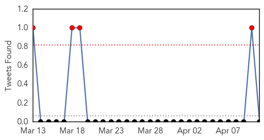

30 Day Trends
Web: 0 alerts, 0 warnings
Twitter: 0 alerts, 0 warnings
Top Articles:
- 0.988
- Haiti Cholera Response United Nations in Haiti, March 2014 - Haiti
- 0.973
- Why Cholera Persists In Haiti Despite An Abundance Of Aid
- 0.958
- Cholera killed 60 in Nigeria's Bauchi in 2014
- 0.922
- Cholera outbreak claims 54 lives in Bauchi- NAN
- 0.905
- Lao gov't formulates plans for possible bird flu outbreak
- 0.540
- Tracking an Ebola Outbreak in a City Without Maps
Top Tweets:
-
No tweets found for Apr 11, 2014
Web/News Articles

Tweets
Article Locations

Article Confidences